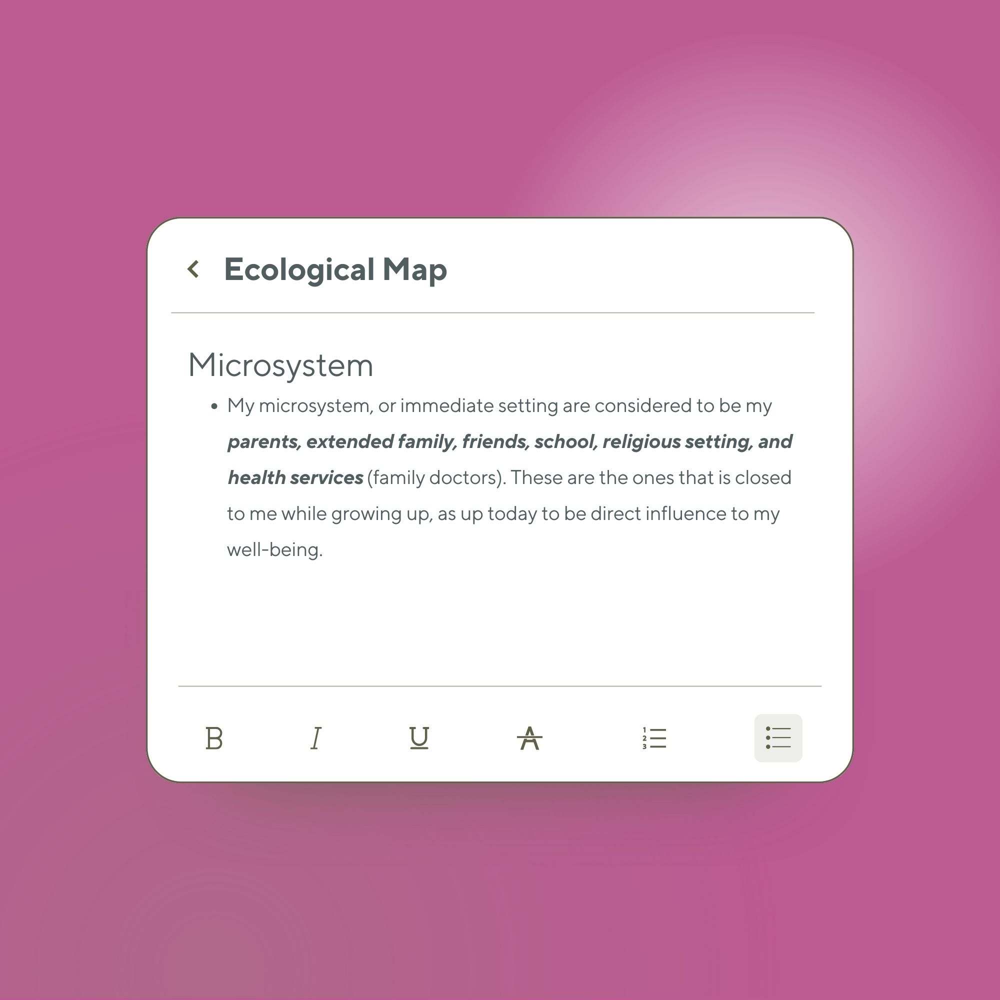
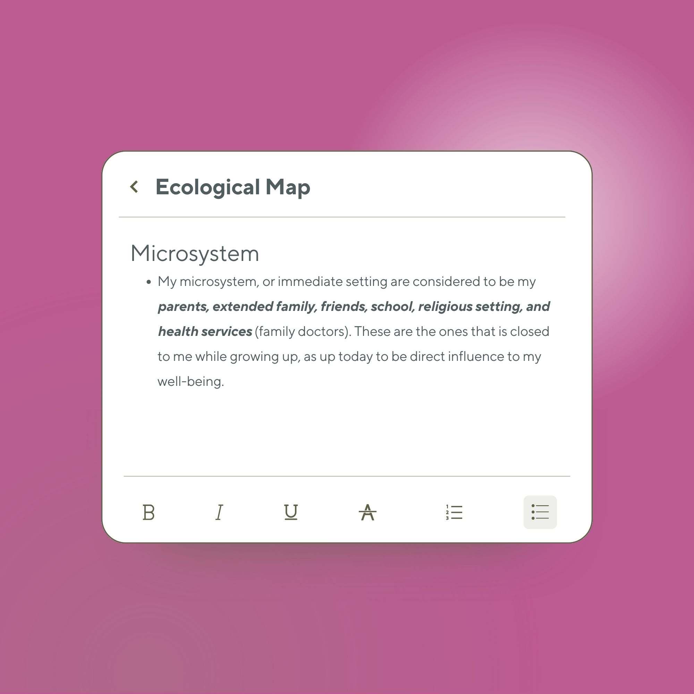
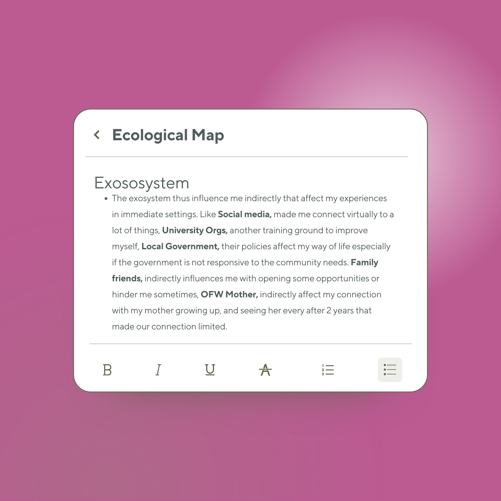
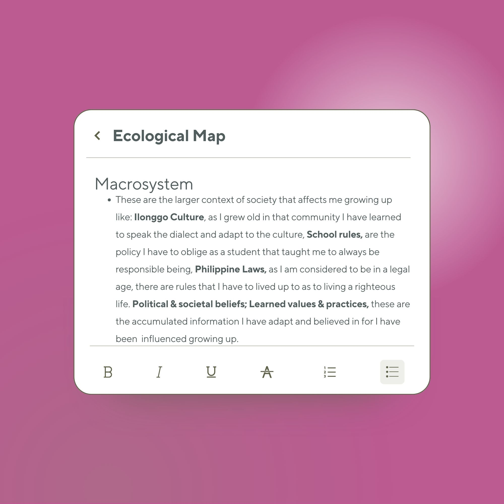
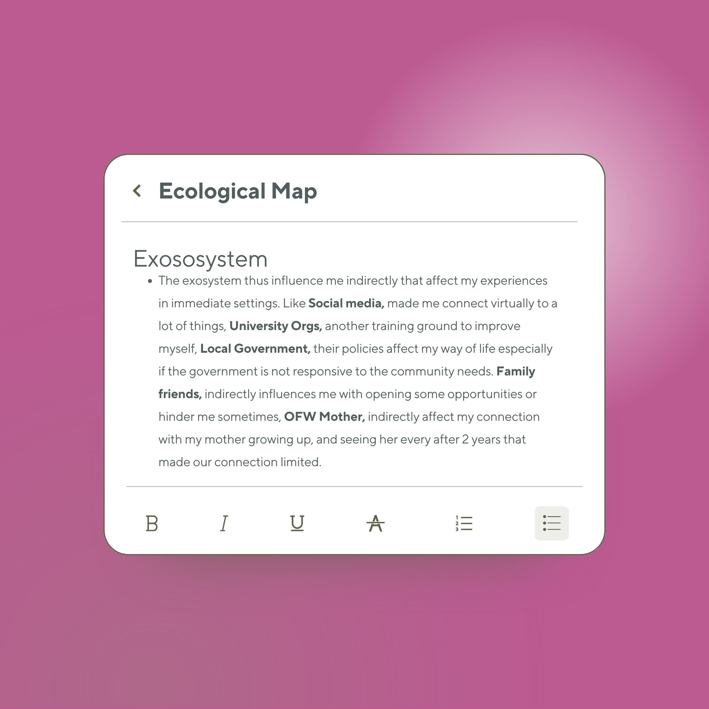
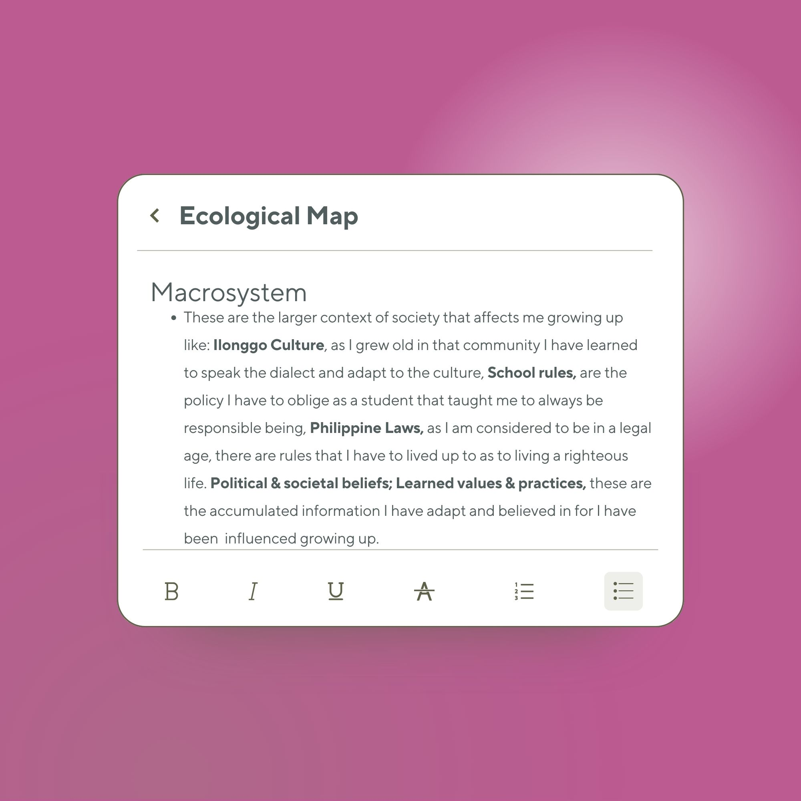

Diane Marie B. Loceño

About Me
Hi! I'm Diane, a 19-year-old Biology Education student with a passion for helping others and making a positive impact on the world. I'm driven by my dreams to become a pediatrician and contribute to UNICEF's mission to improve children's lives globally.
🎤 Hobbies
- Singing
- Dancing
- Reading
- Writing

⭐ Interests
- Photography
- Fashion
- Binge Watching Movies & Series

🎯 Goals
- Become a Pediatrician
- Be a part of UNICEF

My Vision
"To live life for Grace and Wisdom."
My Life Circle - Ecological Map
Explore the people and environments that have shaped my life journey through my ecological map:
 

 




Let there be a child
Prenatal & Infancy (Birth)


Significant Actions
Showing the Physical and Emotional changes I made since birth.
I had shown my emotions to react to my surroundings and to communicate.
I had started crawling and demonstrating minimal movements.
I learned to consume milk from the teat bottles.
Supporting Theories
Hierarchy of Needs (Abraham Maslow)
"Showing the Physical and Emotional changes I made since birth."
Physiological needs (nutrition, warmth, health) are foundational.
"I had shown my emotions to react to my surroundings and to communicate."
Emotional security begins developing; supports safety and belonging needs.
Psychosocial Theory (Erik Erikson)
"I cried so my caregivers could understand my needs."
Erikson's Trust vs. Mistrust stage explains that infants depend on caregivers to meet needs; crying is a natural emotional signal.
"I calmed down when someone held or comforted me."
Emotional stability is formed when consistent caregiving teaches the infant that the world is safe.
Behaviorist Learning Theory (B.F. Skinner)
"I reacted more when people talked to me or smiled at me."
Positive reinforcement (attention, smiles, voice) strengthens a baby's social responses.
"I learned to recognize the sound of the milk bottle."
Infants associate sounds with rewards through conditioning (classical conditioning).

Cognitive Development Theory (Jean Piaget – Sensorimotor Stage)
"I started grabbing things near me."
Piaget states infants learn by exploring objects using touch, sight, and movement.
"I reacted to familiar faces and voices."
Sensorimotor development includes recognizing patterns and building memory.
Finding out my environment
Infancy and Toddlerhood (Birth to 2 Years)
Significant Actions
Develop to talk, and say minimal words like: mama, papa, and other gibberish words.
I had developed to walk and stand on my own. Surprisingly I also manage to run. One of the stories from my uncles is that I ran towards the rice fields of my grandparents and played with mud.
I also learned how to properly eat on my own.
I learned to play with dolls, and other toys.
I also loved to interact and play with other kids.
I also love analyzing photo albums, nature, and actions of other people.
When I turned 1 year old, my parents left me to work in different places, so I had to stay with my grandparents.
Supporting Theories
Nativist Language Theory (Noam Chomsky)
"Developed to talk, and say minimal words like mama, papa, and other gibberish words."
According to Chomsky, babies naturally begin producing sounds because their brain is biologically prepared for language.
Maslow's Hierarchy of Needs (Abraham Maslow)
"I had developed to walk and stand on my own… I also managed to run."
Physical growth supports physiological and safety needs.
Sensorimotor Stage (Jean Piaget)
"I ran towards the rice fields of my grandparents and played with mud."
Piaget states that toddlers explore textures, movement, and the environment to build knowledge.
Behaviorism (B.F. Skinner)
"I also learned how to properly eat on my own."
This behavior develops because caregivers repeatedly guide the child and reinforce correct actions.
Symbolic Play Theory (Piaget – Preoperational Beginnings)
"I learned to play with dolls and other toys."
Piaget explains that toddlers begin pretending and using toys to express imagination and cognitive growth.
Sociocultural Theory (Lev Vygotsky)
"I also loved to interact and play with other kids."
Vygotsky states children grow through shared play, imitation, and guided interactions.
Observational Learning (Albert Bandura)
"I also love analyzing photo albums, nature, and actions of other people."
This shows early observational learning, a key concept in Bandura's theory.
I will follow you
Early Childhood (2 to 5 Years)


Significant Actions
I learned how to talk properly with the help of sign boards and guidance of my family to mimic what they were saying.
I learned movements and coordination through observing what others are doing.
I had learned to dress myself, and bathe myself; in short, I was taught how to take care of myself.
I developed a behavior of watching television to entertain myself.
This is where my grandmother started to teach me how to properly act in certain situations.
I also started showing tantrums and I was being disciplined verbally or physically by my guardians.
We also moved to a different city to be with my father, and I was taken care of by my auntie.
My auntie taught me how to read, write, and to deeply understand other lessons so I could perform better than my other classmates.
I also developed to be competitive with others, and be careful about what I say and act around others.
All of my actions are based on pleasing my parents and doing what I was told.
Supporting Theories
Social Learning Theory (Albert Bandura)

"I learned how to talk properly with the help of sign boards and guidance of my family to mimic what they were saying."
Language skills were developed by observing and imitating family members.
"I learned movements and coordination through observing what others are doing."
Motor skills and coordination were acquired and refined through observation of others.
"I develop a behavior of watching television to entertain myself."
Observing behaviors and routines on television helped in learning ways to entertain oneself.
"I also started showing tantrums and I was being disciplined verbally or physically by my guardians."
Reactions from adults helped in understanding social rules and behavior regulation.
"I also develop to be competitive with others, and be careful about what I say and act around others."
Observing peers and adults helped in learning social norms and appropriate social behavior.
Psychosocial Theory (Erik Erikson)
"I had learned to dress myself, and bathe myself, in short I was taught how to take care of myself."
Developing self-care skills builds autonomy (Autonomy vs. Shame and Doubt).
"I also started showing tantrums and I was being disciplined verbally or physically by my guardians."
Experiencing limits contributed to understanding acceptable behavior and developing self-control (Autonomy vs. Shame and Doubt).
"I also develop to be competitive with others, and be careful about what I say and act around others."
Developing initiative while considering social rules supported social awareness (Initiative vs. Guilt).
Hierarchy of Needs (Abraham Maslow)
"Developed to talk, and say minimal words like mama, papa, and other gibberish words."
Autonomy in self-care supports self-esteem needs. Actions aimed at pleasing parents satisfy belonging and esteem needs.
"All of my actions are based on pleasing my parents and doing what I was told."
Striving to meet approval satisfies belonging and esteem needs.
Sociocultural Theory (Lev Vygotsky)

"This is where my grandmother started to teach me how to properly act in certain situations."
Guidance helped internalize social norms and appropriate behaviors.
"I was taken care of by my auntie. My auntie taught me how to read, write, and to deeply understand other lessons so I can perform better than my other classmates."
Cognitive skills were enhanced through scaffolding and instruction from a more knowledgeable person.
Behaviorism (B.F. Skinner)
"All of my actions are based on pleasing my parents and doing what I was told."
Behaviors were shaped by reinforcement; following rules and pleasing caregivers resulted in positive outcomes, forming habits.
Limitless Me
Middle and Late Childhood (6 to 11 Years)

Significant Actions
We moved back again to our province with my grandparents, and my younger cousin in a remote town in a house where everything that you can see is a rice field.
All I did was to go to school and study. That is why I became timid with other students and did not participate in school activities.
Our only entertainment was television, that is why I started reenacting the things we saw on television with my younger cousin because she was the only one I could play with. I started dressing up and acting like I was in a drama.
I was surrounded by nature, and when I developed the dream of wanting what to become, I thought everything was possible and that I could be accepted in multiple jobs because I had too many aspirations. I thought everything was easy to achieve.
Because of the thought that I can do everything, I developed a sense of confidence and joined a lot of school events like girl scout, majorette, volunteer red cross, journalism, and became an officer of a club.
I was a bubbly kid and an achiever because all I wanted to do was to make my parents proud.
I also had a sense of maturity during that time because my grandmother was busy taking care of my younger cousin, and I was left to take care of myself. That is why I developed a sense of responsibility towards others and felt I should also take care of them.
Whenever I failed at something, I would get scared and cry because I knew my parents would be disappointed. That is why I became competitive and hated it when someone around me was not performing their best. This explains my leadership skills and being organized.
I also developed a sense of curiosity to learn more about the things around me as I grew up.
Supporting Theories
Social Learning Theory (Albert Bandura)
"Our only entertainment was television, that is why I started reenacting the things we see on the television, with my younger cousin because she is the only one I could play with. So I started dressing up and acting like I am in a drama."
Learned social behaviors, role-playing, and imitation by observing television and interacting with a peer.
"Because of the thought that I can do everything I had developed a sense of confidence so I joined a lot of school events like: girl scout, majorette, volunteer red cross, journalism, and became an officer of a club."
Observing others’ achievements inspired participation and confidence in social and leadership roles.
Psychosocial Theory (Erik Erikson)
"All I did was to go to school and study. That is why I became timid with other students and did not participate in school activities."
Conflict between Industry vs. Inferiority; child struggles with competence and social confidence.
"I was a bubbly kid, and an achiever because all I wanted to do was to make my parents proud."
Developing sense of competence and purpose in schoolwork and social achievements (Industry vs. Inferiority).
"I also had a sense of maturity during that time because my grandmother was busy taking care of my younger cousin, I was left to take care of myself. That is why I had this sense of responsibility towards others that I should also take care of them."
Early development of social responsibility and empathy, part of psychosocial growth.
Behaviorism (B.F. Skinner)
"Whenever I fail on something I would get scared and cry because I know my parents would be disappointed. That is why I became competitive and I hate it when someone around me is not performing their best. That explains my leadership skills and being organized."
Behaviors shaped by reinforcement and consequences; striving to meet parental expectations strengthened habits of responsibility and leadership.
Sociocultural Theory (Lev Vygotsky)
"We moved back again to our province with my grandparents, and my younger cousin in a remote town in a house where everything that you can see is a rice field."
Interaction with a smaller social environment and family influenced social learning and problem-solving.
"I also developed a sense of curiosity to learn more about the things around me as I grew up."
Guided exploration and social scaffolding nurtured curiosity and cognitive development.
Maslow's Hierarchy of Needs (Abraham Maslow)
"We moved back again to our province with my grandparents, and my younger cousin in a remote town in a house where everything that you can see is a rice field."
Physiological needs and safety needs were foundational in a simpler environment.
"I was a bubbly kid, and an achiever because all I wanted to do was to make my parents proud."
Love and belonging, as well as esteem needs, motivated achievement.
"Because of the thought that I can do everything I had developed a sense of confidence so I joined a lot of school events like: girl scout, majorette, volunteer red cross, journalism, and became an officer of a club."
Esteem needs are fulfilled through competence, recognition, and social achievement.
Moral Development (Kohlberg)
"Whenever I fail on something I would get scared and cry because I know my parents would be disappointed. That is why I became competitive and I hate it when someone around me is not performing their best."
Early pre-conventional stage of moral development; behavior is guided by consequences and understanding of “right” and “wrong” based on approval/disapproval.
"I also had a sense of maturity during that time because my grandmother was busy taking care of my younger cousin, I was left to take care of myself. That is why I had this sense of responsibility towards others that I should also take care of them."
Early moral reasoning and empathy develop, understanding duties toward others.
Exploring and Re-Development of my Youth
Adolescence (12 to 19 Years)


Significant Actions
This is the time that I moved back with my father in Manila because I was at the right age that they trusted me to be responsible.
As a competitive student and with a sudden change of environment, I was able to learn that there are better students than me, which made me introverted and caused me to not perform well in school.
I also grew distant from my parents, as I was really fond of my grandparents. That is why I always hung out with friends that I had in school.
I learned how to lie about my whereabouts just to hang out with others and please them to like me as a friend.
I also liked to spend my time using my gadgets because it was the first time I had ever used the internet, and I was really happy that I could access everything with my gadget.
As time went by, I observed that I became worn out by academics and lost interest in being a top student.
I also stopped listening to my parents' demands because I became self-centered.
During this time, I also experienced bullying from my friends, which affected me and made me insecure about myself.
I was taught to be independent growing up, so I re-evaluated my life decisions and healed from my trauma to become a better person.
I started thinking about my plans and dreams, which led me to want to become a doctor.
As I started focusing on my growth, I noticed changes in my life: I became more critical about my decisions, ensured I stayed tidy, and made sure to achieve my daily plans.
I also became competitive again because that is my nature—to always do my best and not change myself even with sudden changes in life.
Now, I started to become confident about myself, discovering new hobbies, and focusing on achieving my dreams.
Supporting Theories
Psychosocial Theory (Erik Erikson)
"This is the time that I moved back with my father in Manila because I was at the right age that they trusted me to be responsible."
Reflects development of Identity vs. Role Confusion; adolescents begin forming personal identity and autonomy.
"I also grew distant relationships with my parents, as I am really fond of my grandparents. That is why I always hangout with friends that I had in school."
Adolescents develop social identity and peer influence becomes stronger; exploring relationships is key to forming self-identity.
"I was taught to be independent growing up so I re-evaluated my life decisions and heal from my trauma growing up to become a better person."
Adolescents develop self-reflection and personal identity as part of psychosocial growth.
Social Learning Theory (Albert Bandura)
"I also learned how to lie about my whereabouts just to hangout with others to please them to like me as a friend."
Learning social behaviors and norms through observation and peer influence.
"I also liked to spend my time using my gadgets because it was the first time I had ever used the internet and I was really happy that I could access everything with my gadget."
Learning and exploring social and informational content through observation online.
Behaviorism (B.F. Skinner)
"I also stopped listening to my parents' demands because I became self-centered."
Behavior shaped by consequences and reinforcement; autonomy drives new patterns of decision-making.
"I also become competitive again because that is my nature, to always do my best and not change myself even if there are sudden changes in my life."
Repetition of behaviors reinforced by personal satisfaction and past experiences.
Sociocultural Theory (Lev Vygotsky)
"Within this time I also experience bullying from my friends that affects me to become insecure about myself."
Social environment and peer interactions influence emotional and cognitive development.
"I started thinking about my plans and dreams, and that led me to want to become a doctor."
Social context and guidance (family, teachers, peers) help shape career aspirations and cognitive planning.
Hierarchy of Needs (Abraham Maslow)
"I was taught to be independent growing up so I re-evaluated my life decisions and heal from my trauma growing up to become a better person."
Psychological needs such as safety, love, and belonging; rebuilding emotional security.
"Now, I started to become confident about myself, discovering new hobbies, and focusing on achieving my dreams."
Esteem and self-actualization needs; personal growth, confidence, and fulfillment.
Moral Development (Lawrence Kohlberg)
"I also learned how to lie about my whereabouts just to hangout with others to please them to like me as a friend."
Pre-conventional moral reasoning; behavior guided by approval and avoiding social consequences.
"I started thinking about my plans and dreams, and that led me to want to become a doctor."
Early post-conventional reasoning; internalized values guide decision-making and long-term goals.
Cognitive Development Theory (Jean Piaget – Formal Operational Stage)
"I started thinking about my plans and dreams, and that led me to want to become a doctor."
Adolescents engage in abstract thinking, hypothetical reasoning, and planning for the future.
"As I started focusing on my growth I had seen some changes in my life; I became critical about my decisions, I always make sure to be tidy, and I always make sure that I am able to achieve my plans within the day."
Development of metacognition, self-monitoring, and logical thinking.